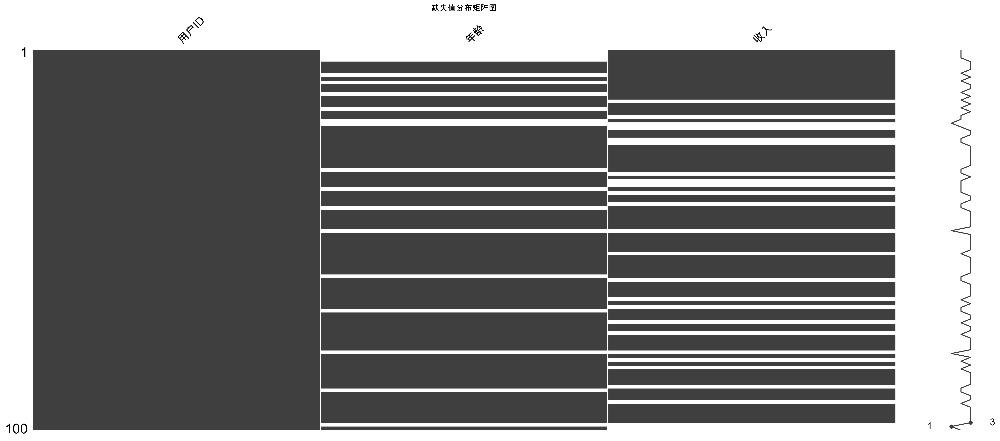
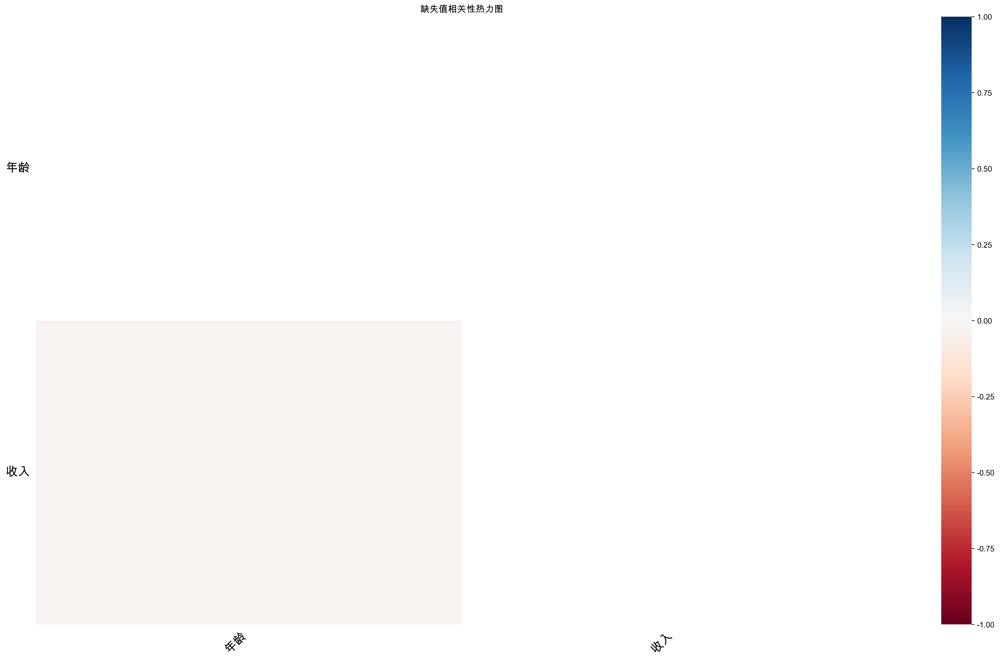
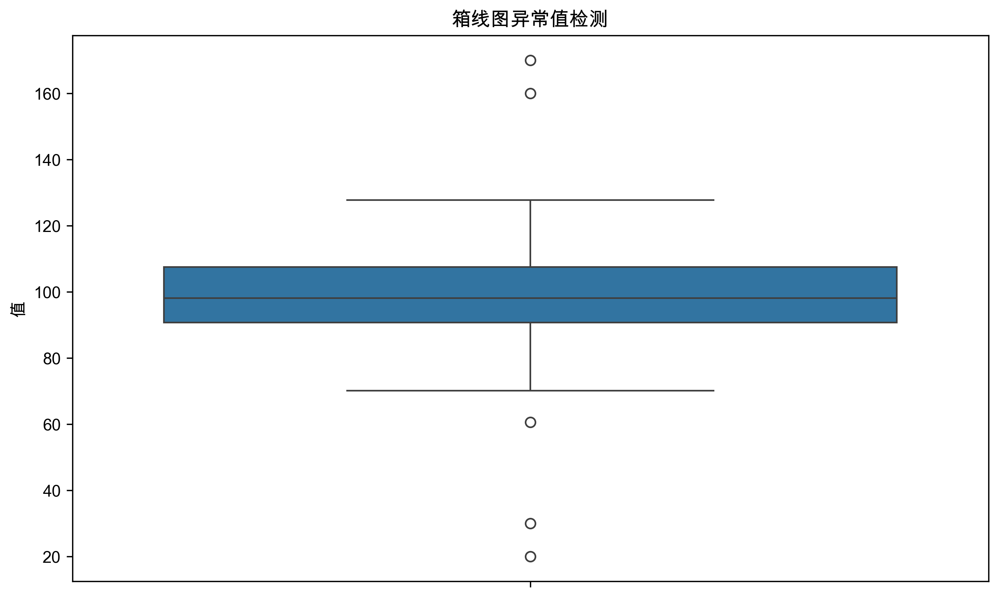
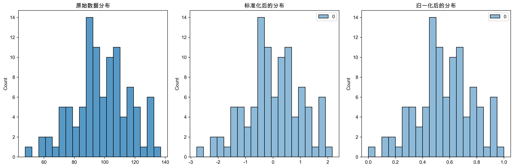
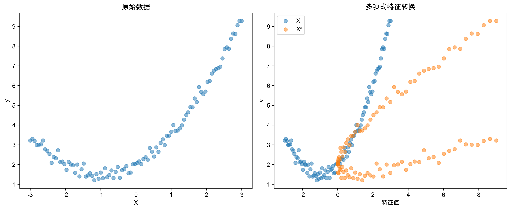
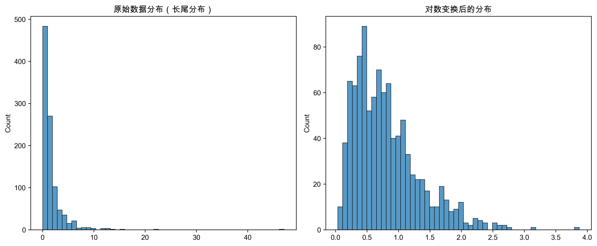

第二周：数据预处理与特征工程基础
- 掌握使用
Pandas进行数据加载和探索的方法，包括数据读取、查看、统计分析和可视化。 - 掌握常见的数据清洗方法，包括缺失值处理 (删除、填充) 和异常值处理 (检测与处理)。
- 理解特征工程的基本概念和方法，包括数值特征处理 (特征缩放、特征转换) 和类别特征处理 (独热编码、标签编码)。
- 掌握使用
Scikit-learn进行数据预处理和特征工程的常用方法。 - 能够使用 AI 辅助编程工具完成数据预处理和特征工程的编程练习。
- 了解小组项目一：电商用户行为数据探索与预处理 的目标、数据集和任务要求。
第一次课：数据预处理与特征工程基础
1. 数据加载与探索
1.1 使用 Pandas 读取数据
常用函数: pd.read_csv(), pd.read_excel() 等
常用参数:
filepath_or_buffer: 文件路径 (必需)sep或delimiter: 分隔符 (默认为,)header: 列名行 (默认为0)index_col: 索引列encoding: 文件编码 (例如utf-8,gbk)
注意: 如果读取 CSV 文件出现乱码，可以尝试更换 encoding 参数。
1.2 数据查看
df.head(n): 查看前n行df.tail(n): 查看后n行df.info(): 查看数据摘要信息 (重要)df.describe(): 查看数值列统计信息df.shape,df.columns,df.index,df.dtypes: 查看数据结构信息
2. 数据清洗
2.1 缺失值处理
2.1.1 检测缺失值
df.isnull()df.sum()df.isnull().sum()missingno库 (可视化)


2.1.2 缺失值处理策略
- 删除法:
df.dropna()(慎用) - 填充法:
df.fillna(value)- 固定值填充
- 均值/中位数/众数填充 (使用
SimpleImputer)
import pandas as pd
from sklearn.impute import SimpleImputer
import numpy as np
# 创建包含缺失值的 DataFrame
data = {'数值特征': [1, 2, np.nan, 4, 5, np.nan],
'类别特征': ['A', 'B', 'C', np.nan, 'A', 'B']}
df = pd.DataFrame(data)
print("原始数据:\n", df)
# 均值填充数值特征
mean_imputer = SimpleImputer(strategy='mean')
df['数值特征_mean_填充'] = mean_imputer.fit_transform(df[['数值特征']])
print("\n均值填充后:\n", df)
# 中位数填充数值特征
median_imputer = SimpleImputer(strategy='median')
df['数值特征_median_填充'] = median_imputer.fit_transform(df[['数值特征']])
print("\n中位数填充后:\n", df)
# 众数填充类别特征 (或数值特征)
mode_imputer = SimpleImputer(strategy='most_frequent')
df['类别特征_mode_填充'] = mode_imputer.fit_transform(df[['类别特征']])
print("\n众数填充后:\n", df)- 插值法:
df.interpolate() - 高级方法: 模型预测 (本课程不深入)
选择合适的缺失值处理策略需要根据具体情况和业务理解。
2.2 异常值处理
2.2.1 异常值检测方法
- 箱线图 (Boxplot)
- Z-score
- IQR (四分位距)
- 其他方法 (聚类, LOF 等)

2.2.2 异常值处理策略
- 删除法 (慎用)
- 替换法
- 视为缺失值
- 不处理
注意: 异常值处理同样需要根据具体情况和业务理解。
3. 特征工程基础
3.1 数值特征处理
特征缩放 (Feature Scaling): 将数值特征缩放到一定范围，避免特征量纲不一致和数值过大/过小带来的问题。
- 标准化 (Standardization):
- 将特征缩放到均值为 0，标准差为 1 的分布
- 公式：
x_scaled = (x - mean) / std sklearn.preprocessing.StandardScaler

import pandas as pd
from sklearn.preprocessing import StandardScaler
import numpy as np
# 创建示例数据
data_scaling = {'数值特征': np.array([[10], [20], [30], [40], [50]])}
df_scaling = pd.DataFrame(data_scaling)
print("原始数据:\n", df_scaling)
# 使用 StandardScaler 进行标准化
scaler = StandardScaler()
df_scaling['数值特征_标准化'] = scaler.fit_transform(df_scaling[['数值特征']])
print("\nStandardScaler 标准化后:\n", df_scaling)标准化适用于大多数机器学习算法，特别是： - 基于距离度量的算法 (例如 KNN, 聚类) - 梯度下降算法 (例如 线性回归, 逻辑回归, 神经网络)
标准化后，数据分布的形态可能会发生改变，但不会改变数据的相对大小关系。
归一化 (Normalization): - 将特征缩放到 0 和 1 之间 (也称 Min-Max 缩放) - 公式：x_scaled = (x - min) / (max - min) - sklearn.preprocessing.MinMaxScaler
import pandas as pd
from sklearn.preprocessing import MinMaxScaler
import numpy as np
# 继续使用上面的示例数据
df_scaling_minmax = pd.DataFrame(data_scaling)
print("原始数据:\n", df_scaling_minmax)
# 使用 MinMaxScaler 进行归一化
minmax_scaler = MinMaxScaler()
df_scaling_minmax['数值特征_归一化'] = minmax_scaler.fit_transform(df_scaling_minmax[['数值特征']])
print("\nMinMaxScaler 归一化后:\n", df_scaling_minmax)- 归一化通常用于对数值范围敏感的算法 (例如 神经网络)
- 归一化后，数据会被压缩到 [0, 1] 区间
- 数据分布的形态会发生改变
- 如果数据中存在 outliers，MinMaxScaler 对 outliers 比较敏感
RobustScaler: 使用 IQR (四分位距) 进行缩放，对 outliers 鲁棒MaxAbsScaler: 将特征缩放到 [-1, 1] 区间，适用于稀疏数据
选择合适的缩放方法需要根据数据分布和模型特点。
特征转换 (Feature Transformation): 对数值特征进行函数变换，使其更符合模型假设或业务需求。
- 多项式特征:
- 通过多项式扩展，增加特征的非线性
sklearn.preprocessing.PolynomialFeatures

import pandas as pd
from sklearn.preprocessing import PolynomialFeatures
import numpy as np
# 创建示例数据
data_poly = {'数值特征': np.array([[1], [2], [3], [4]])}
df_poly = pd.DataFrame(data_poly)
print("原始数据:\n", df_poly)
# 使用 PolynomialFeatures 创建 2 次多项式特征
poly = PolynomialFeatures(degree=2, include_bias=False)
poly_features = poly.fit_transform(df_poly[['数值特征']])
poly_feature_names = poly.get_feature_names_out(['数值特征'])
df_poly_encoded = pd.DataFrame(poly_features, columns=poly_feature_names)
print("\nPolynomialFeatures 2 次多项式特征:\n", df_poly_encoded)- 多项式特征可以捕捉特征之间的非线性关系
- 适用于线性模型处理非线性数据
- 但多项式特征会增加特征维度
- 高次多项式容易过拟合
对数变换: 对特征取对数，压缩数据范围，平滑数据分布，处理长尾分布。
numpy.log,numpy.log1p(推荐使用 log1p，避免 log(0) 错误)

import pandas as pd
import numpy as np
# 创建示例数据 (模拟长尾分布)
np.random.seed(42)
data_log = {'数值特征': np.exp(np.random.normal(0, 1, 100))}
df_log = pd.DataFrame(data_log)
# 绘制原始数据直方图
df_log['数值特征'].hist(bins=50)
plt.title('原始数据直方图 (长尾分布)')
plt.show()
# 进行对数变换
df_log['数值特征_对数变换'] = np.log1p(df_log['数值特征'])
# 绘制对数变换后数据直方图
df_log['数值特征_对数变换'].hist(bins=50)
plt.title('对数变换后数据直方图')
plt.show()- 适用于处理长尾分布数据，例如用户行为数据、商品销量数据等
- 对数变换可以减小数据的偏度，使其更接近正态分布
- 有利于一些模型的训练
幂变换: 对特征进行幂运算，调整数据分布形态。
- Box-Cox 变换, Yeo-Johnson 变换: 更通用的幂变换，可以处理不同分布的数据
sklearn.preprocessing.PowerTransformer
选择合适的特征转换方法需要根据业务理解和数据探索选择。
3.2 类别特征处理
独热编码 (One-Hot Encoding):
- 将类别特征转换为多个二元特征
- 每个类别对应一列，存在该类别则为 1，否则为 0
- 适用于类别之间没有顺序关系的情况 (例如：颜色、城市)
pandas.get_dummies,sklearn.preprocessing.OneHotEncoder
import pandas as pd
from sklearn.preprocessing import OneHotEncoder
# 创建类别特征数据
data_onehot = {'颜色': ['红', '绿', '蓝', '红', '绿'],
'城市': ['北京', '上海', '广州', '北京', '深圳']}
df_onehot = pd.DataFrame(data_onehot)
print("原始数据:\n", df_onehot)
# 使用 pandas.get_dummies 进行独热编码
df_onehot_dummies = pd.get_dummies(df_onehot, columns=['颜色', '城市'])
print("\npandas.get_dummies 独热编码后:\n", df_onehot_dummies)
# 使用 OneHotEncoder 进行独热编码
encoder = OneHotEncoder(sparse_output=False)
onehot_features = encoder.fit_transform(df_onehot[['颜色', '城市']])
feature_names = encoder.get_feature_names_out(['颜色', '城市'])
df_onehot_encoded = pd.DataFrame(onehot_features, columns=feature_names)
print("\nOneHotEncoder 独热编码后:\n", df_onehot_encoded)处理高基数类别特征 (类别数量过多) 可能导致维度灾难。
标签编码 (Label Encoding):
- 将类别特征转换为数值标签，每个类别对应一个整数
- 适用于类别之间有顺序关系的情况 (例如：学历、等级)
sklearn.preprocessing.LabelEncoder
import pandas as pd
from sklearn.preprocessing import LabelEncoder
# 创建类别特征数据
data_label = {'学历': ['本科', '硕士', '博士', '本科', '硕士']}
df_label = pd.DataFrame(data_label)
print("原始数据:\n", df_label)
# 使用 LabelEncoder 进行标签编码
label_encoder = LabelEncoder()
df_label['学历_标签编码'] = label_encoder.fit_transform(df_label['学历'])
print("\nLabelEncoder 标签编码后:\n", df_label)
# 查看类别标签映射关系
label_mapping = dict(zip(label_encoder.classes_, label_encoder.transform(label_encoder.classes_)))
print("\n类别标签映射关系:\n", label_mapping)标签编码可能会引入类别之间的顺序关系，如果类别没有实际顺序意义，可能不适用。
- 顺序编码 (Ordinal Encoding): 类似于标签编码，但可以自定义类别顺序
- 适用于类别之间有明确顺序关系的情况
sklearn.preprocessing.OrdinalEncoder
- 二进制编码 (Binary Encoding)
- 效应编码 (Effect Encoding)
- 目标编码 (Target Encoding)
4. Scikit-learn 数据预处理和特征工程常用模块
sklearn.preprocessing: 提供了各种数据预处理和特征工程的函数和类StandardScaler,MinMaxScaler,RobustScaler,MaxAbsScaler(特征缩放)PolynomialFeatures,PowerTransformer(特征转换)OneHotEncoder,LabelEncoder,OrdinalEncoder(类别特征编码)SimpleImputer(缺失值填充)
sklearn.impute: 提供了缺失值填充的类SimpleImputer,KNNImputer(KNN 填充)IterativeImputer(迭代填充)
sklearn.feature_selection: 提供了特征选择的类 (下周讲解)
5. 小组项目一：电商用户行为数据探索与预处理
项目背景: 电商平台积累了大量的用户行为数据，例如用户的点击、浏览、购买、加购、收藏等行为。通过分析这些数据，可以了解用户兴趣偏好、购买行为模式，为个性化推荐、精准营销、用户增长等提供数据支持。
- 鼓励学生小组自主选择数据集，建议选择电商或零售行业的用户行为数据集
- 数据集应包含用户行为数据，数据量适中，特征维度不低于10个
- 鼓励各小组选择不同的数据集，以提高项目实践的多样性
示例数据集：阿里巴巴天池 - 淘宝用户行为数据
- 包含 2000 万条淘宝用户的行为记录
- 字段：用户ID、商品ID、商品类目ID、行为类型、时间戳
- 数据已简化处理，便于教学使用
- 数据探索:
- 加载数据集，查看数据基本信息
- 分析用户行为类型分布、时间分布等
- 可视化用户行为数据
- 数据清洗:
- 处理缺失值
- 检测和处理异常值
- 根据数据探索结果进行必要的清洗操作
- 特征工程:
- 构建用户特征和商品特征
- 尝试构建交叉特征或衍生特征
- 对特征进行必要的预处理
- 预处理后的数据集 (CSV 格式)
- Python 代码 (Jupyter Notebook 或 Python 脚本)
- 包含数据探索、清洗和特征工程的完整代码
- 代码需要有清晰的注释
- 小组分工说明 (可选)
评分标准: 数据预处理的完整性、代码的规范性、数据探索的深入程度、特征工程的合理性
第二次课：小组项目一实践
- 学生分组进行小组项目一
- 教师巡回指导，解答问题
- 完成小组项目一代码初稿
- 继续完善小组项目一的数据预处理代码
- 课前提交预处理结果
- 预习下周课程：特征选择与降维